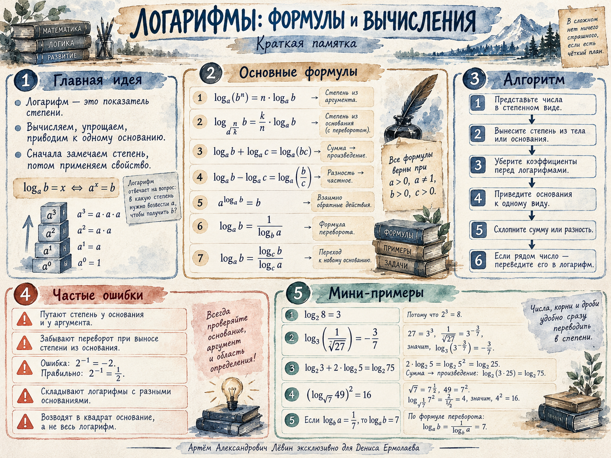

01
Корень в аргументе
Из занятия: семь корней и обратная степень.
МАТЕМАТИКА / 26 ОКТЯБРЯ 2026 / 11 КЛАСС
Разбираем свойства логарифмов, учимся приводить основания к одному виду, вычислять выражения с корнями и степенями и пользоваться логарифмами в прикладной задаче.
Логарифм показывает, в какую степень необходимо возвести основание, чтобы получить заданное положительное число.
Это определение удобно запомнить как переход между логарифмической и показательной формой.
На занятии использовали два коротких опорных факта:
Пример:
Первые четыре действия позволяют «разобрать» и снова «собрать» логарифмы; последние три помогают переходить к удобной записи.
| Свойство | Формула | Когда применять |
|---|---|---|
| Степень аргумента | Показатель выходит без изменения. | |
| Степень основания | Показатель превращается в обратный множитель; r ≠ 0. | |
| Сумма | Аргументы перемножаем. | |
| Разность | Аргументы делим. | |
| Основное тождество | Основания внешней степени и логарифма совпадают. | |
| Переход к новому основанию | d > 0, d ≠ 1. | |
| Взаимно обратные логарифмы | b ≠ 1. |
Все формулы применяются при допустимых положительных аргументах и основаниях. При преобразовании степени основания показатель обязан быть ненулевым.
Показатель выходит без переворота.
Сначала перепишите составные числа через степени одного числа; дробь в основании даёт отрицательный показатель.
Простейшие переходы, на которых основаны вычисления:
При работе с дробными степенями в этих примерах предполагается положительное основание.
Из занятия: семь корней и обратная степень.
Основание и аргумент переводим к степени пятёрки.
27 и одна треть переводятся к основанию 3.
Двойка становится логарифмом по основанию 3.
Применяем основное логарифмическое тождество и обращаем внимание, над чем именно стоит показатель.
Сначала переносим коэффициент в показатель аргумента; сумму в показателе разлагаем на произведение степеней.
Число один удобно выразить логарифмом в той же системе оснований, а затем применить формулу взаимной обратности.
Запись с квадратом всего логарифма отличается от квадрата только аргумента.
Если дано , найдите значение выражения:
Использованы сумма логарифмов, степень аргумента и взаимная обратность.
Рассмотрена учебная модель изменения объёма при сжатии воздуха.
Величины: работа, постоянная модели, количество вещества, температура и отношение исходного объёма к конечному.
Ответ: конечный объём 5 литров, что меньше исходных 40 литров и соответствует сжатию.
Ошибки, на которые обращали внимание во время занятия.
Отмечено 0 из 6 пунктов в текущем просмотре.
От определения и дробных степеней к преобразованиям и прикладной задаче. Раскрывайте ответы после самостоятельного решения.
Материалы для повторения за пределами страницы занятия.
